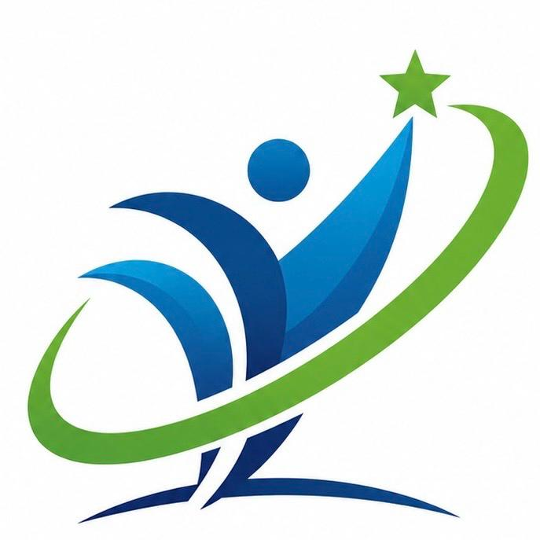

Recursos, conceptos y recomendaciones para fortalecer el conocimiento en tu establecimiento gastronómico.
Tu código de 8 caracteres aparece al finalizar el diagnóstico en el Módulo 2.
Developed by F I X O R I A
Basado en tu diagnóstico, estas son las intervenciones más urgentes para Restaurante La Antigua. Ordenadas por prioridad.
Este es el patrón más frecuente en el sector gastronómico de Popayán: el 67% de los restaurantes diagnosticados aprenden a nivel individual y grupal, pero no convierten ese aprendizaje en memoria organizacional.
Lo que esto significa en La Antigua: si mañana se va el cocinero principal, el restaurante pierde no solo a la persona sino también las recetas ajustadas, los tiempos de cocción correctos para esa cocina específica, los trucos para manejar el servicio del fin de semana. Todo eso vive en su cabeza.
El conocimiento de La Antigua vive en las personas. Alta vulnerabilidad.
El conocimiento vive en un sistema. La persona se puede ir, el conocimiento se queda.
Nonaka & Takeuchi (1995); Argote (2013); Crossan et al. (1999)
La media de esta dimensión en los restaurantes de Popayán analizados fue de 2.22 — la más baja de todo el modelo. El sector opera en casi total desconexión del entorno externo.
El monitoreo del entorno no requiere herramientas costosas. Requiere el hábito de mirar hacia afuera regularmente con intención. Tres fuentes simples dan más inteligencia de contexto de la que la mayoría de los restaurantes de Popayán tienen hoy.
Fauzi (2023); Barišić et al. (2020); Coetzer et al. (2017)
Conceptos, preguntas frecuentes y contexto para entender mejor los resultados de tu diagnóstico.
Un restaurante aprende cuando mejora porque sus personas aprenden — y cuando ese aprendizaje queda en el sistema y no solo en las personas. La diferencia entre un restaurante que aprende y uno que no, no está en el talento del equipo: está en si ese talento se convierte en conocimiento organizacional que persiste más allá de las personas.
Cuando el restaurante mejora porque las personas aprenden — no porque llegó alguien nuevo a decirles cómo hacerlo.
El sistema que hace que lo que sabe una persona también lo sepa el restaurante. Recetas documentadas, procedimientos escritos, lecciones aprendidas registradas.
Lo que sabes pero no está escrito. La forma exacta en que se hace el sancocho, el tiempo de cocción que funciona para esa cocina específica, cómo manejar al cliente difícil del domingo.
Lo que el restaurante recuerda independientemente de quién trabaja en él. Procedimientos, recetas y aprendizajes pasados registrados en algún soporte físico o digital.
Diferencia entre lo que sabe el equipo y lo que retiene el restaurante como sistema. Cuanto mayor es la brecha, más vulnerable es el establecimiento a la rotación de personal.
Las 20 preguntas frecuentes con fundamento académico estarán disponibles en la versión final del sistema SAGEST.
SAGEST es un sistema de diagnóstico y aprendizaje organizacional diseñado para restaurantes de Popayán. Evalúa 8 dimensiones a través de dos módulos, calcula un perfil de madurez organizacional y entrega recomendaciones personalizadas según el rol y el contexto del establecimiento. Desarrollado como parte de la Maestría en Gestión del Talento Humano — Universidad ICESI.
Sistema de Aprendizaje y GESTión Organizacional — SAGEST
Tesis de Maestría en Gestión del Talento Humano · Universidad ICESI
Mercy Johanna Valencia Caicedo & Edison Ospina Gaviria